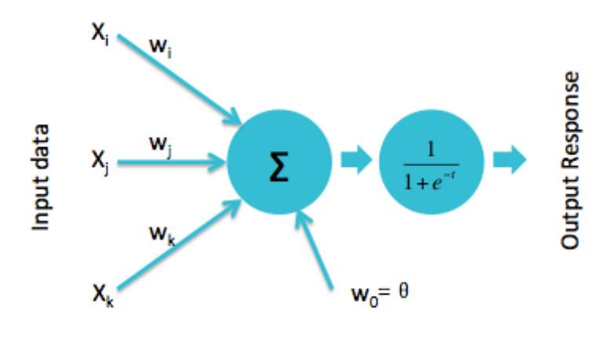
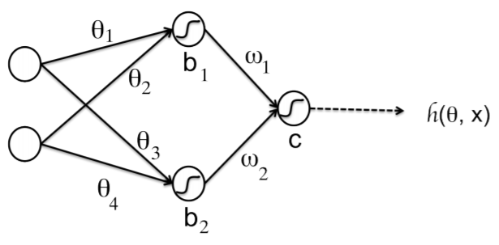
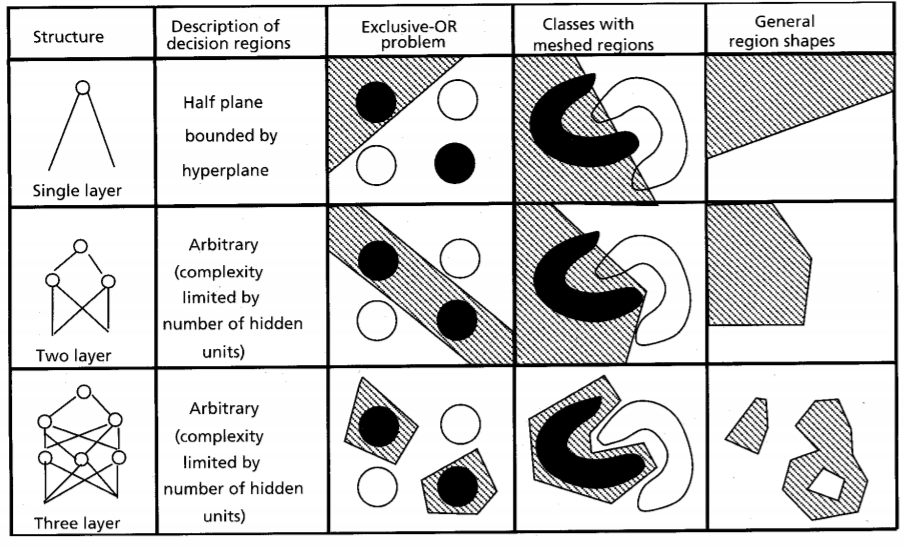
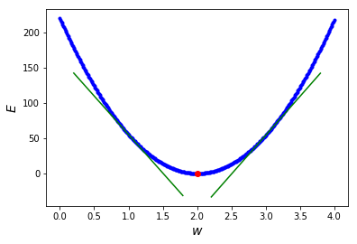
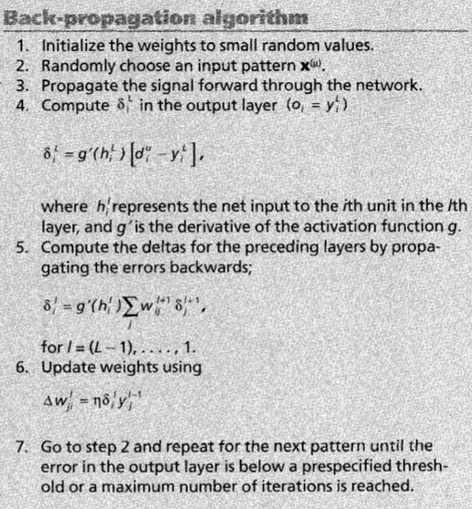
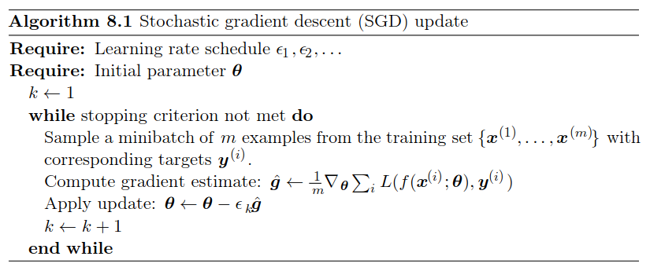
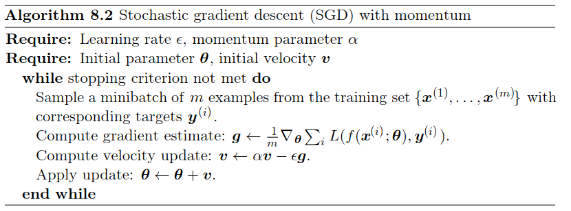
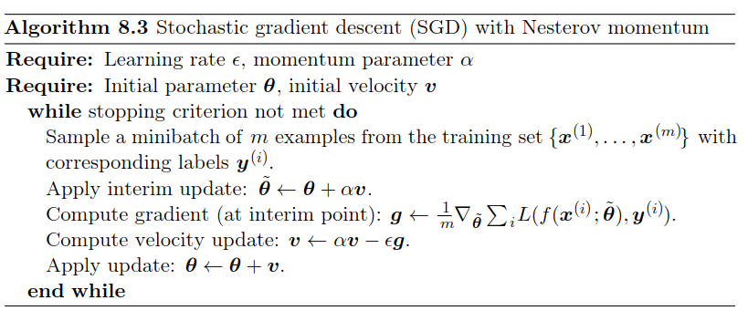
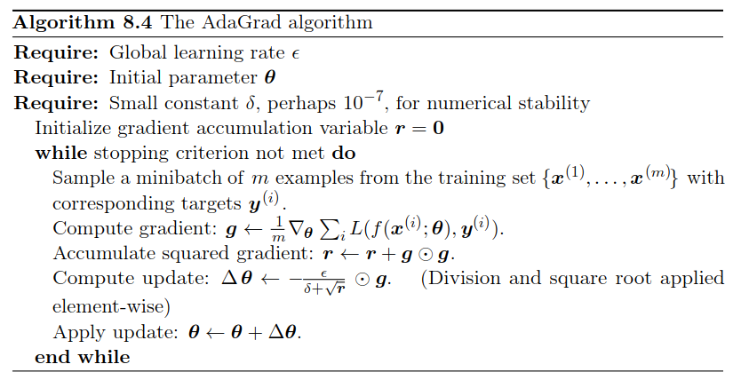

Machine Learning and Neural Networks
Roberto Santana and Unai Garciarena
Department of Computer Science and Artificial Intelligence
University of the Basque Country
Neural Network Paradigms: Table of Contents
Multilayer perceptron

Characteristics
- Provide a general framework for representing non-linear functional mappings between a set of input variables and a set of output variables.
- Mainly used for supervised ML. It extends the representation capabilities of the perceptron.
- Contrary to the perceptron, it includes one or more hidden layers.
- Different activation functions can added to the network.
C. M. Bishop. Neural Networks for Pattern Recognition. Oxford University Press. 2005.
R. Rojas. Neural networks: a systematic introduction. Springer Science & Business Media. Chapter 7. 2013.
Perceptron
Learning
- Non-linear activation units are introduced.
- Weights are updated as:
\[ w_i(t+1) = w_i(t) + \left (d_j -y_j(t) \right) x_{j,i}, \]
where \( d_j \) is the desired output
Modern perceptron

H. Wang, B. Raj, and E. P. Xing. On the Origin of Deep Learning. arXiv preprint arXiv:1702.07800. 2017.
Multi-Layer perceptron
Properties
- Perceptron: Single neuron.
- One-layer neural network: Putting perceptrons side by side.
- Multi-layer neural network (MLP): Stacking one one-layer NN upon the other.
- Universal approximation property: An MLP can represent any function.
K. Kawaguchi. A multithreaded software model for backpropagation neural network applications. Ph. D. Thesis. 2000.
Multi-Layer perceptron
-

Network function
\[ \begin{align} h({\bf{x}}) =& g \left ( w_1 h_1({\bf{x}}) + w_2 h_2({\bf{x}}) + c \right ) \\ =& g \left ( w_1 g(\theta_1 x_1 + \theta_2 x_2 + b_1) + w_2 g(\theta_3 x_1 + \theta_4 x_2 + b_2) + c \right ) \end{align} \]
Q. V. Le. A Tutorial on Deep Learning. Part 1: Nonlinear Classifiers and The Backpropagation Algorithm. 2015.
Multi-Layer perceptron
-

A. K. Jain, J. Mao, and K. M. Mohiuddin. Figure. Artificial neural networks: A tutorial. Computer. Vol. 29 No. 3. Pp. 31-44. 1996.
Multi-Layer perceptron
Properties
- Boolean approximation: An MLP of one hidden layer can represent any boolean function exactly.
- Continuous approximation: An MLP of one hidden layer can approximate any bounded continuous function with arbitrary accuracy.
- Arbitrary approximation: An MLP of two hidden layers can approximate any function with arbitrary accuracy.
N. J. Guliyev and V. E. Ismailov A single hidden layer feedforward network with only one neuron in the hidden layer can approximate any univariate function. 2016.
A simple model:
\(y = w x \)
- We have a regression problem and want to learn a model.
- This means finding the optimal parameter \(w\).
- We use the squared error as loss function.
Evaluating the quality of a model
| Input | True Model | Output | Abs. Error | Square Error |
|---|---|---|---|---|
| x | M(x)=2x | g(x) | |g(x)-M(x)| | (g(x)-M(x))^2 |
| 0 | 0 | 0 | 0 | 0 |
| 1 | 2 | 3 | 1 | 1 |
| 2 | 4 | 6 | 2 | 4 |
| 3 | 6 | 9 | 3 | 9 |
| 4 | 8 | 12 | 4 | 16 |
| 5 | 10 | 15 | 5 | 25 |
| All | 15 | 55 |
Evaluating the quality of a model
| Input(x) | True Model | W=3 | SE (W=3) | SE (W=3.02) | SE (W=2.98) |
|---|---|---|---|---|---|
| 0 | 0 | 0 | 0 | 0 | 0 |
| 1 | 2 | 3 | 1 | 1.04 | 0.96 |
| 2 | 4 | 6 | 4 | 4.16 | 3.84 |
| 3 | 6 | 9 | 9 | 9.36 | 8.64 |
| 4 | 8 | 12 | 16 | 16.64 | 15.36 |
| 5 | 10 | 15 | 25 | 26.01 | 24.01 |
| All | 55 | 57.22 | 52.82 |
Error function
-

Derivative
- Because the error function is continuous, a small change in \(w\) can only result in a small change in \(e\).
- This could be expressed as:
\[ f(w + \epsilon_w) = e + \epsilon_e \] - Because the function is smooth, when \(\epsilon_e\) is small enough:
\[ f(w + \epsilon_w) = e + a * \epsilon_w \] - The previous linear approximation is valid, only in the \(\epsilon\)-neighborhood of \(w\), i.e, if we are close enough to \(w\).
- The slope of this linear approximation is called the derivative.
Derivative

Derivative
- A positive slope means the function increases as we increase \(w\).
- Similarly, a negative slope negative slope means the function increases when we decrease \(w\).
- If the derivative is zero, there is a local optimum.
- Therefore, a good strategy to find the optimum is to move \(x\) in the oppossite direction to the sign of its derivative at the current point.
- This is what gradient descent, a popular optimization algorithm, uses to implement its update rule as:
\[ w = w - \mu f'(w) \] where \( \mu \) is a learning rate parameter.
Gradient descent

Gradient
Definition and interpretation
The gradient of a function \( J(\theta_1,\dots,\theta_d) \) is a vector-value function defined as:
\[
\nabla J(\theta_1,\dots,\theta_d) = < \frac{\partial J}{\partial \theta_1}(\theta_1,\dots,\theta_d), \dots,\frac{\partial J}{\partial \theta_d}(\theta_1,\dots,\theta_d)>
\]
- The gradient of a multi-variable function has a component for each direction.
- The gradient points in the direction of greatest increase.
Gradient descent
Finding the optimum of the loss function
Gradient descent: A local minimization method based on updating the parameters of a function \( J(\theta_1,\dots,\theta_d) \) in the opposite direction to its gradient.
A parameter \( \mu \) is used to indicate the learning rate of the algorithm (the size of the step taken to reach to local optimum)
S. Ruder. An overview of gradient descent optimization algorithms. arXiv preprint arXiv:1609.04747. 2016.
Multi-Layer perceptron
What about the weights of hidden layers?
Network function
\[ \begin{align} h({\bf{x}}) =& g \left ( w_1 h_1({\bf{x}}) + w_2 h_2({\bf{x}}) + c \right ) \\ =& g(w_1 g(\theta_1 x_1 + \theta_2 x_2 + b_1) \\ +& w_2 g(\theta_3 x_1 + \theta_4 x_2 + b_2) + c) \end{align} \]
What is needed?
- We need a way to update the weights of the hidden layers (gradient descent?).
- For that we would need how to compute the gradient of the NN error with respect to each weight.
MLP
Q. V. Le. A Tutorial on Deep Learning. Part 1. Nonlinear classifiers and the backpropagation algorithm. 2015.
Derivative of a composite function
- Since our network function is a a composite function, we need to compute its derivative applying the chain rule.
- Chain rule:
\[ h'(x)= \frac{d}{dx}[g(f(x))] = g'(f(x)) f'(x) \]
Backpropagation
Characteristics
- Backpropagation provides a computationally efficient method for evaluating the partial derivatives of all the weights of the neural network with respect to the output.
- Gradients are computed by first estimating the error in each layer of the network.
- Gradients are then used by the optimization algorithms (i.e., variants of gradient descent) to update the weights incrementally.
- Backpropagation reuses the errors of the outer (closer to the output) layers to compute the errors of the inner layers in a more efficient way.
Backpropagation
Steps
- Feed-forward computation: The network is used for processing the inputs and the error between predictions and target values is computed.
- Backpropagation of the error: The error is backpropagated through the network. For every weight, the partial derivatives are computed.
- Weight updates: The partial derivatives are used to update the weights.
MLP Backpropagation
-

A. K. Jain, J. Mao, and K. M. Mohiuddin. Figure. Artificial neural networks: A tutorial. Computer. Vol. 29 No. 3. Pp. 31-44. 1996.
Multi-Layer perceptron
Backpropagation
Recursive computation
- Perform a feedforward pass to compute \( h^1, h^2, h^3, \dots, h^L \).
- For the output layer compute: \[ \delta_1^L = 2(h^L-y) g' \left( \sum_{j=1}^{S_{L-1}} \theta_{1j}^{L-1}h_j^{L-1}+b_1^{L-1} \right) \]
- Perform a backward pass for \( l = L-1, L-2, \dots, 2. \; \; \) For each neuron \(i\) in layer \(l\), compute: \[ \delta_i^L = \left( \sum_{j=1}^{S_{l+1}} \theta_{ji}^{l} \delta_j^{l+1} \right) g' \left( \sum_{j=1}^{S_{l-1}} \theta_{ij}^{l-1}h_j^{l-1}+b_i^{l-1} \right) \]
- The desired partial derivatives can be computed as \( \Delta \theta_{ij}^{l} = h_j^{l} \delta_i^{l+1} \) and \( \Delta b_i^{l} = \delta_i^{l+1} \).
Notation
\( h(x) \): decision function
\( g \): activation function
\( \theta^l_{ij} \): weight at layer \(l\)-th between input \(j\)-th and neuron \(i\)-th in layer \((l+1)\)-th
\( b_i \): bias of neuron \( i \)
\( s_l \): number of neurons in the layer
Optimization methods for deep neural networks
Finding the optimum of the loss function
Optimization is involved in several aspects of machine learning algorithms.
Of all the optimization problems involved in deep learning, the most difficult is neural network training.
Optimization is also relevant to the efficiency of the DNN learning algorithm.
We focus on the optimization problem of finding the parameters \( \Theta \) of a neural network that significantly reduce a (possibly regularized) loss function \( J(\Theta) \).
I. Goodfellow and Y. Bengio and A. Courville. Deep Learning. Chapter 8. Optimization for Training Deep Models. MIT Press. 2016.
Gradient descent
Finding the optimum of the loss function
Gradient descent algorithms can be grouped in three classes according to the way the gradient is used for the updates:
- Batch gradient descent.
- Stochastic gradient descent (SGD).
- Mini-batch gradient descent.
S. Ruder. An overview of gradient descent optimization algorithms. arXiv preprint arXiv:1609.04747. 2016.
Gradient descent variants
Batch gradient descent
To perform one parameter update, computes the gradient of \(J\) using all the points the dataset as:
\[
\theta = \theta - \epsilon \nabla_{\theta} J(\theta)
\]
- Guaranteed to converge to the global minimum for convex functions and to local minimum for non-convex functions.
- Not very efficient since for performing a single update the gradients of the whole dataset are evaluated.
Gradient descent variants
Stochastic gradient descent (SGD)
A parameter update is performed for each point \(x^i\) and label \(y^i\) as:
\[
\theta = \theta - \epsilon \nabla_{\theta} J(\theta;x^i,y^i)
\]
- Usually much faster than batch gradient descent.
- Can be used to learn online.
- Convergence to local minimum is not guaranteed.
Gradient descent variants
Mini-batch gradient descent
A parameter update is performed for each mini-batch of \(n\) points \( (x^i,\dots,x^{i+n})\) and labels \((y^i,\dots,y^{i+n})\) as:
\[
\theta = \theta - \epsilon \nabla_{\theta} J(\theta; (x^i,\dots,x^{i+n}),(y^i,\dots,y^{i+n}))
\]
- Combines characteristics of batch gradient descent and SGD.
- Can make use of highly optimized matrix optimizations.
- Nevertheless, it does not guarantee a good convergence.
- Very sensitive to the learning rate \( \epsilon \).
- It can be trapped in local optima, particularly saddle points.
(Mini-batch) stochastic gradient descent
-

I. Goodfellow and Y. Bengio and A. Courville. Deep Learning. Chapter 8. Optimization for Training Deep Models. MIT Press. 2016.
Advanced gradient descent methods
Momentum
- A fraction \( \alpha \) of the update vector of the past time step is added to the current vector as:
\[ v_t = \alpha v_{t-1} - \epsilon \nabla_{\theta} J(\theta) \\ \theta = \theta + v_t \] - Helps accelerate SGD in the relevant directions and dampens oscillations.
- The larger \(\alpha \) is relative to \(\epsilon\), the more previous gradientes affect the current direction.
Momentum
-

I. Goodfellow and Y. Bengio and A. Courville. Deep Learning. Chapter 8. Optimization for Training Deep Models. MIT Press. 2016.
Advanced gradient descent methods
Nesterov accelerated gradient (NAG)
- Computes an approximate prediction of the parameters in order to calculate the gradient w.r.t. the approximate future position of the parameters.
- The updates are defined as:
\[ v_t = \alpha v_{t-1} - \epsilon \nabla_{\theta} J(\theta + \alpha v_{t-1}) \\ \theta = \theta + v_t \]
Nesterov accelerated gradient (NAG)
-

I. Goodfellow and Y. Bengio and A. Courville. Deep Learning. Chapter 8. Optimization for Training Deep Models. MIT Press. 2016.
Gradient descent variants
Other advanced gradient descent methods
Adagrad
Adadelta
RMSprop
Adam
AdaMax
Nadam
Characteristics
- Adapt the learning rate of parameters (similar to annealing schedules).
- Can use a different learning rate for each parameter.
- Some restrict the window of accumulated past gradients to some fixed size \( w \).
- Some keep exponentially decaying average of past gradients.
Adagrad
-

I. Goodfellow and Y. Bengio and A. Courville. Deep Learning. Chapter 8. Optimization for Training Deep Models. MIT Press. 2016.
Gradient optimization methods


Images credit: Alec Radford.
Gradient optimization methods

Images credit: Alec Radford.